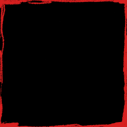

Quest {{ loop.index0 }} {% endfor %}By , day {{ day }} of the expedition.

Quest {{ loop.index0 }} {% endfor %}Language
Click a quest to strike it out. ↑ ↓ / D-pad to choose, Enter / A to press. Space / Y switches the language.